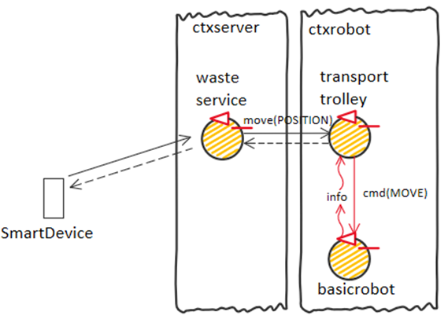
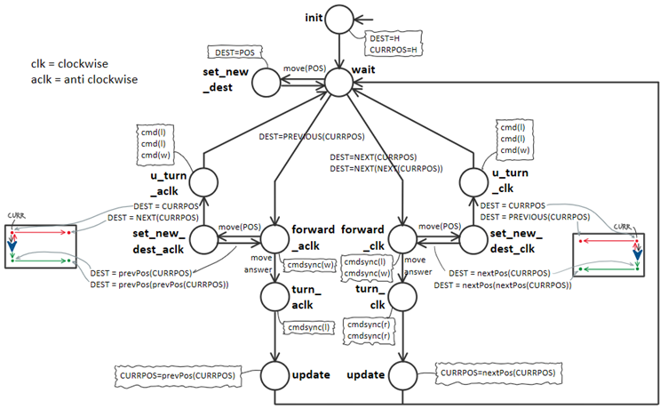

Introduction
Progetto finale di ISS, che consiste in un impianto di smistamento dei rifiuti nel quale un robot deve trasportare il materiale dal camion al relativo container
Requirements
Requirement analysis
Dizionario
Vengono qui riportati solo gli elementi nuovi o modificati rispetto al dizionario dello sprint0.
Vengono segnati in viola i termini non presenti nei requisiti, ma introdotti in quanto utilizzati all'interno dei documenti prodotti
La formalizzazione avviene quando possibile con costrutti del linguaggio Kotlin, mentre quando opportuno verrà utilizzato QAK
- Transport trolley:
- In seguito alla relativa analisi del problema di questo sprint, Transport trolley rappresenta un'entità robotica astratta che riceve i comandi di alto livello relativi alla prossima destinazione da raggiungere, e i comandi di Pickup e Dropout.
Nota: il Transport trolley può ricevere una richiesta di nuova posizione prima che abbia raggiunto la destinazione precedente: la navigazione sarà impostata sulla nuova destinazione. In questo modo è possibile soddisfare direttamente nuove richieste anche mente il robot sta andando in home.
Formalizzazione://POSITION = INDOOR | PLASTICBOX | GLASSBOX | HOME //RESULT = OK | ERROR Request move : move(POSITION) Reply moveanswer : moveanswer(RESULT) Request pickup : pickup(_) Reply pickupanswer : pickupanswer(RESULT) Request dropout : dropout(_) Reply dropoutanswer : dropoutanswer(RESULT)
Scrum Goal and Work Plan
Scrum goal:
Obiettivo dello SPRINT1 è la creazione di una prima demo (su ambiente virtuale) che tenga presente dei soli punti 1 e 2 specificati dal committente, i punti principali che contengono la core business logic del problema (descrivono infatti le Deposit action e la Service area)
Piano di lavoro:
- Analisi del problema di come affrontare la navigazione, anche in relazione al SW già sviluppato (possibile visitare la pagina riassuntiva Applicazioni22 dei moduli sviluppati)
- Analisi di quali e quanti componenti è composto il problema, e definizione delle interazioni tra di essi
- Sviluppo / adattamento di tali componenti
- Realizzazione di un modello eseguibile (a tal proposito verrà utilizzato il metamodello QAK).
- Realizzazione di un (più completo) test-plan per il modello
Problem analysis
Architettura logica precedente:
Transport trolley
DDR robot vs Transport trolley:
-
Possibile una separazione dei due concetti:
Il termine "DDR - Differential Drive Robot" rappresenta la tecnologia con la quale il robot si muove. Il DDR robot è quindi una entità di basso livello che riceve comandi base come "anvanti", "destra", "sisnitra", "halt", ecc..
Possiamo quindi identificare il DDR robot come l'attore QAK basicrobot presente nel progetto basicrobot22, che infatti riceve comandi://MOVE = w | a | s | d | h Dispatch cmd : cmd(MOVE)
-
Invece il Transport trolley è concepita come entità astratta di più alto livello che si occpura di ricevere la destinazione generica
//POSITION = INDOOR | PLASTICBOX | GLASSBOX | HOME Request move : move(POSITION) Reply moveanswer : moveanswer(RESULT)
La relazione che esiste tra WasteService e Transport trolley è quindi di tipo "use".
Questa separazione in due layer rende il sistema più resistente ad eventuali future variazioni della tecnologia utilizzata per il robot (movimento a step con coordinate o meno, tipologia di hardware del robot). Il WasteService continuerà ad inviare al Transport trolley gli stessi comandi astratti, senza preoccuparsi di "in che modo" o "con quali mezzi" la destinazione viene raggiunta.
Dove collocare Transport trolley:
Risulta concettualmente sensato porre Transport trolley nello stesso contesto di basicrobot.Transport trolley potrebbe infatti necessitare di cambiamenti nel caso in cui cambi il DDR Robot e la tecnologia di movimento usata.
Si noti tuttavia che, qualora tale componente debba fare utilizzo di un planner (che effettua una ricerca nello spazio degli stati), allora si dovrebbe considerare la possibilità di porre tale attore su un nodo computazionale più potente, dove il consumo di potenza non è un problema (mentre si presume che il robot sia alimentato a batteria).
Alla luce delle osservazioni sinora fatte, l'architettura logica attuale è la seguente: 
Transport trolley non gestisce autonomamente carico/scarico:
Per questioni di flessibilità, abbiamo tenuto separate le operazioni di carico, scarico e movimento. In questo modo se dovesse cambiare il processo di smistamento basterà modificare la sequenza di comandi che vengono impartiti al Transport trolley, senza bisogno di modificare quest'ultimo. Riteniamo inoltre corretto far gestire questa operazione a Transport trolley, siccome un domani potrebbe esser necessario inviare comandi o segnali a HW presente sul robot per compiere queste azioni.
//RESULT = OK | ERROR
Request pickup : pickup(_)
Reply pickupanswer : pickupanswer(RESULT)
Request dropout : dropout(_)
Reply dropoutanswer : dropoutanswer(RESULT)
Interazioni con il Transport trolley:
Si noti come le interazioni con il Transport trolley siano tutte delle request-response.
Colui che comanda il Transport trolley (cioè una visione astratta e ad alto livello del robot) si aspetta una interazione sincrona bloccante, e si aspetta una risposta con l'esito dell'operazione.
Tuttavia, solo per il comando move(POSITION), è possibile comandare una nuova destinazione anche se quella precedente non è stata ancora raggiunta.
Questo perchè è possibile che arrivi un nuovo Waste-truck mentre il Transport trolley sta tornando a HOME. In questo modo è possibile soddisfare il requisito di gesione immediata della nuova richiesta senza aspettare che il Transport trolley raggiunga HOME.
Il nuovo comando annulla di fatto la move precedente, quindi si riceverà solo la risposta relativa all'ultimo comando.
Principio di funzionamento del Transport trolley:
Sistema a coordinate, o semplice macchina a stati che rileva impatto con i muri?
La particolare collocazione delle zone INDOOR, PLASTICBOX, GLASSBOX, HOME rende attuabile una soluzione che non richiede l'utilizzo di coordinate: il robot può infatti muoversi all'interno della Service area lungo le pareti, orientandosi semplicemente rilevando le collisioni con le pareti.
In questa sezione analizziamo i punti a favore dell'utilizzo un sistema a coordinate e uno senza coordinate:
I vantaggi nell'utilizzo di un sistema a coordinate:
- Potenziale riuso di moduli che già abbiamo sviluppato (mapper, planner)
- Maggiore flessibilità (posizione dei siti non è più negli angoli, robot deve seguire un percorso ottimo, ostacoli nel percorso, gestione più semplice del cambio di destinazione mentre il robot è in movimento)
I vantaggi nell'utilizzo di un sistema senza coordinate:
- Minor complessità, minor costo
- Maggior velocità negli spostamenti, e maggior velocità di reazione a comandi di halt
- Possibile miglior reazione (piuttosto che a singoli step) da parte di robot reali che non fatto uso di sistemi in feedback o altro hardware per controllare meglio la propria posizione
Per la realizzazione del Transport trolley sono state analizzate 3 diverse opzioni, che vengono qui descritte:
OPZIONE 1
Si tratta di una semplice macchina a stati che è in grado di raggiungere la destinazione facendo fare al robot sempre un giro in senso antiorario.
Se viene cambiata la destinazione mentre il robot è in movimento, esso non cambia direzione, perchè comunque per raggiugere ogni altro sito procede in senso antiorario, e quindi il prossimo sito deve comunque essere raggiunto.
Pro e Contro:
- + semplicità
- + possibile estendere la soluzione appena mostrata per attenere l'opzione successiva
- - poca flessibilità
- - politica non molto efficiente
La macchina a stati che deve essere implementata all'interno di Transport trolley se si vuole percorrere questa soluzione è la seguente:
Tuttavia è possibile implementarla in maniera più sintetica e compatta nel seguente modo:
OPZIONE 2
Si tratta di un'estensione dell'opzione 1: il robot è in grado di raggiungere la prossiama destinazione procedendo sia in senso orario che in senso antiorario (in base a cosa è più conveniente in quel momento). Inoltre il robot può cambiare rotta anche mentre si sta muovendo in avanti.
Pro e Contro:
- + più veloce in alcuni casi
- - più complesso
La macchina a stati che deve essere implementata all'interno di Transport trolley si complica, perchè tra ogni "macro stato" e l'altro il ramo ha molti più stati:
E' pur sempre possibile una implementazione più sintetica e compatta:
OPZIONE 3
Il modulo, data la posizione corrente e l'orientamento del robot, fa un certo numero di step per raggiungere le coordinate di destinazione.
Pro e Contro:
- + flessibilità
- + esiste sw per mappare le dimensioni della stanza (unibo.mapperQak22) e per trovare path (unibo.planner22)
- - rischiesto mapping iniziale della servicearea
- - le dimensioni della servicearea potrebbero non essere multiple di RD. È dunque necessaria una logica che (una volta raggiunte le coordinate di destinazione) faccia andare il robot a contatto con la porta, per poter effettuare le operazioni di carico/scarico.
Scelta: OPZIONE 1
Scegliamo la prima soluzione perché è la più semplice e quindi economica, fermo restando che a partire da questa è possibile estenderla per ottenere la seconda versione.
Inoltre se un giorno nuovi requisiti dovessero imporre l'utilizzo di un sistema di coordinate, verrebbe modificato soltanto il componente "transporttrolley".
WasteService
Possiamo pensare il WasteService come il componente controller, ossia quello che contiene la business logic del sistema.
Abbiamo analizzato le funzionalità che il servizio WasteService deve offrire, e abbiamo quindi formalizzato tale entità con il modello qak.
Per una migliore comprensione il diagramma degli stati di questo attore viene qui riassunto con il seguente schema:

Test plans
Sono stati resi osservabili tramite Coap gli attori WasteService e TrasportTrolley.
Sono state inoltre create due classi di utilità TestObserver e TestUtils in grado di leggere lo storico delle informazioni di WasteService e TrasportTrolley
e poterne valutare il corretto funzionamento nei test
Test effettuati:
- test_2_accepted(): Test due richieste accettate
- test_1_accepted_1_rejected(): Test due richieste una accettata e una rifiutata
- test_accepted(): Test singola richiesta accettata
- test_rejected(): Test singola richiesta rifiutata
- test_2_accepted_while_in_operation(): Test due richieste (la seconda inviata mentre la prima richiesta non era ancora conclusa) accettate
- test_1_accepted_1_rejected_while_in_operation(): Test due richieste (la seconda inviata mentre la prima richiesta non era ancora conclusa) una accettata e una rifiutata
- test_2_accepted_while_returning_home(): Test due richieste (la seconda inviata mentre il robot stava tornando a casa dalla prima richiesta) accettate
- test_1_accepted_1_rejected_while_returning_home: Test due richieste (la seconda inviata mentre il robot stava tornando a casa dalla prima richiesta) una accettata e una rifiutata
- test_1_accepted_1_rejected_while_returning_home_1_accepted(): Test dove se si riceva una depositrequest, ed essa è poi rifiutata, viene consumato il messaggio mediante un autoanello nello stato di wait
TestSprint1_simple.kt:
Classe di test TestSprint1_hystory.kt:
La seguente classe di test verifica inoltre i cambiamenti di stato che avvengono negli attori WasteService e TrasportTrolley mediante un Observer CoAP.